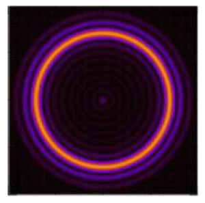

In my last post, on the IAGRG30 Conference held at BITS Hyderabad, I had mentioned how during my talk I was corrected by Amitabh Virmani on a seemingly technical point. My talk was on connecting String Theory with Loop Quantum Gravity and as is inevitable in any such talk I opened with a brief description of the AdS/CFT (Anti-deSitter/Conformal Field Theory) correspondence which is nowadays one of the best understood models for a theory of quantum gravity. The statement I made, which Virmani objected to was the following:
... Anti-deSitter is a compact space ...
On the face of it, this is a manifestly incorrect statement and therefore Amitabh was perfectly justified in pointing out the error in what I said. However, the story does not end there. As I will argue in this post, it is valid to consider anti-deSitter spacetime as a “compact” space and that it is precisely this property of AdS geometry which makes feasible the possibility of experimentally realizing the AdS/CFT conjecture in a laboratory.
Anti-deSitter Spacetime
For the uninitiated the metric of a Schwarzschild-AdS black hole is given by (Hashimoto, Murata, and Kinoshita 2018):
$\(\label{eqn:ads-schwarzschild}\nd s^{2}=-F(r) d t^{2}+\frac{d r^{2}}{F(r)}+r^{2}\left(d \theta^{2}+\sin ^{2} \theta d \varphi^{2}\right) \\\)where the function\(F(r)\)is given by:\(\label{eqn:ads-schwarzschild-radial}\nF(r)=1-\frac{2 G M}{r} + \frac{r^{2}}{L^{2}} \\\)Here\(M\)is the mass of the black hole, and\(L\)is the “AdS length” which is related to the (negative) cosmological constant by:\(\label{eqn:ads-length} \Lambda = - \frac{3}{L^2} \\\)In the limit that\(L \rightarrow \infty\)(\(\Lambda \rightarrow 0\)), the metric reduces to that of a Schwarzschild black hole embedded in asymptotically flat space:\(\label{eqn:schwarzschild}\nd s^{2}=-\left(1-\frac{2 G M}{r}\right) d t^{2}+\frac{d r^{2}}{\left(1-\frac{2 G M}{r}\right)}+r^{2}\left(d \theta^{2}+\sin ^{2} \theta d \varphi^{2}\right) \\\)“Asymptotically” is a fancy word which means “at infinity”, i.e. as one moves radially outwards from the center of the spacetime and (\(r \rightarrow \infty \Rightarrow F(r) \rightarrow 0)\), the metric in \(\eqref{eqn:schwarzschild}\) reduces to that of a flat Minkowski spacetime:\(\label{eqn:minkowski}\nd s^{2}=-d t^{2}+ d r^{2}+r^{2}\left(d \theta^{2}+\sin ^{2} \theta d \varphi^{2}\right) \\\)Similarly, if in \(\eqref{eqn:ads-schwarzschild-radial}\) we send the mass of the black hole to zero\(M \rightarrow 0\)we are left with the metric of an Anti-deSitter spacetime in the so-called “static co-ordinates” (Natsuume 2014):\(\label{eqn:ads-metric}\nd s^{2}=-\left(1 + \frac{r^2}{L^2} \right) d t^{2}+\frac{d r^{2}}{\left(1 + \frac{r^2}{L^2} \right)}+r^{2}\left(d \theta^{2}+\sin ^{2} \theta d \varphi^{2}\right) \\\)Compact Spaces
Let me remind the reader what is meant by the mathematical term “compact space”. Consider the real number line which is set of all points between\(-\infty\)and\(+\infty\):\(\label{eqn:real-line} \mathbb{R} = \left\\{ x : x \in (-\infty, +\infty) \right\\} \\\)This is a non-compact or “open” set because its boundary, the points at infinity, are not elements of the set. Likewise consider the Minkowski spacetime whose metric is given by \(\eqref{eqn:minkowski}\). This spacetime stretches off to infinity in both the radial and timelike directions, i.e.\(r \in (-\infty, +\infty)\)and\(t \in (-\infty, +\infty)\). One can “compactify” both the real line and Minkowski space by adding the “point at infinity” to the definition of the respective sets. However, there are many sets which are bona-fide compact sets without any need for compactification. These include: 1. any closed interval on the real line:\(\left[ a, b \right]\), i.e. the set of all points between\(a\)and\(b\)(inclusive) 2. a circle$S1\(3. a two-sphere\)S2\(, or 4. a ball (the union of the two-sphere with all the points in its interior). From this perspective the anti-deSitter spacetime with the metric given by \eqref{eqn:ads-metric} is <em>topologically</em> a non-compact space, since its co-ordinates take values in a non-compact set:\)r (-, +)\(and\)t (-, +)$.
Topological Compactness vs. Metric Compactness
However, there is an important sense in which the AdS metric \(\eqref{eqn:ads-metric}\) describes a compact space. The geometry of spatial slices of this spacetime (\(t = \text{constant}\)) are described the metric:\(\label{eqn:ads-spatial-metric}\nds_{x}^2 = \frac{d r^{2}}{\left(1 + \frac{r^2}{L^2} \right)}+r^{2}\left(d \theta^{2}+\sin ^{2} \theta d \varphi^{2}\right) \\\)where I have put a subscript\(x\)on the line element\(ds_x^2\)to indicate that this metric is purely spatial. Now the spherical part of this metric is given by the usual flat space expression:\(r^2 d\Omega^2\), however, as\(r \rightarrow \infty\)the length of a radial line interval becomes shorter because of the presence of the\((1 + r^2/L^2)^{-1}\)factor in the purely radial part\(g_{rr}\)of the metric.Thus, even though the spatial sections of anti-deSitter are not topologically compact, they are metric(ally) compact. This is shown in the above figure created by the great illustrator of paradoxical geometric designs - M. C. Escher. This is a tiling of the two-dimensional hyperbolic plane with tiles of two different colors. Technically it takes an infinite number of tiles to cover the region within the circle. However, since the metric of the hyperbolic plane is of the form \(\eqref{eqn:ads-spatial-metric}\), the size of tiles decreases - with respect to the metric in the ambient space with the usual flat metric - as one takes the limit\(r \rightarrow \infty\).
AdS in the Laboratory
It is precisely this metric compactness of anti-deSitter which opens the door to the possibility of experimentally verifying the AdS/CFT conjecture in a real-world laboratory! There are still some people who would argue that the gravitational bulk theory in this conjecture is a purely mathematical construct which does not have any relevance for real life. However, it is rapidly becoming apparent to the community at large that this correspondence is more than just a theoretical idealization. The bulk AdS spacetime is no less real than Maxwell’s waves or Planck’s photons. No less a figure than Leonard Susskind is willing to stick his neck out and state as much (Susskind 2017). Of course, it is perhaps a sign of how delicate this issue is that even a giant such as Susskind felt compelled to couch his statement not in the form of a formal paper but as an informal “letter to colleagues”. To quote from his paper (Susskind 2017):
Where there is quantum mechanics, there is also gravity. I suggest that this is true in a very strong sense; even for systems that are deep into the non-relativistic range of parameters—the range in which the Newton constant is negligibly small, and and the speed of light is much larger than any laboratory velocity. This may sound like a flight of fantasy, but I believe it is an inevitable consequence of things we already accept.
There are other papers, however, which are somewhat less timid about investigating the possible experimental realization of this “flight of fancy” and have suggested possibilities for concrete experimental realizations of holography in condensed matter systems. An example is the paper by Chen et al. (Chen et al. 2018) (published in PRL, no less!). This paper also does not quite make the explicit statement that given a condensed matter system living on the boundary of some geometry (such as a circle or a sphere) one can expect the bulk geometry to exhibit the generation of an effective AdS metric. It approaches this goal in a somewhat indirect manner1. It is now well understood that the SYK model for strongly interacting fermions (named after its originators - Subir Sachdev and Jinwu Ye (Sachdev and Ye 1993) - and after the person who linked it to quantum gravity in a talk at KITP around 2008 - Alexei Kitaev) is a viable candidate to describe the domain of spacetime within a black hole embedded in an anti-deSitter spacetime. As shown by various authors over the past decade (Hayden and Preskill 2007; Sekino and Susskind 2008; Shenker and Stanford 2014) black hole interiors can be understood as quantum many body systems which are maximally chaotic2. It is this correspondence between the appearance of a chaotic many-body phase and quantum gravity that is exploited in the work by Chen et al. (Chen et al. 2018). They argue that a graphene flake with irregular boundaries can provide the experimental setting for observing such a phenomenon in the laboratory. In (Danshita, Hanada, and Tezuka 2017) Danshita et al. argue that one can achieve the “experimental realizations of quantum black holes” in the laboratory by using ultra-cold fermionic gases in optical lattices. Here also the authors make use of the correspondence between the SYK model and black hole interiors to make the case for experimental realization of holography.
Imaging AdS Black Holes
The most remarkable paper, in my opinion, is the very recent work by Hashimoto et al. (Hashimoto, Murata, and Kinoshita 2018) which has the very direct title of “Imaging black holes through AdS/CFT”.![An illustration of the experimental setup for direct imaging of the emergent AdS black hole in the interior region of a spherical shell. Source: [@Hashimoto2018Imaging]](../../wp-content/uploads/2019/03/hashimoto-imaging-ads-300x175.png)
They show, via detailed analytic and numerical calculations the manner in which the emergent AdS black hole in the interior of a spherical shell can be observed in the laboratory. The primary ingredient in 2D quantum many body system to lie on a closed spherical surface whose state can be tuned to lie close to that of a thermal conformal field theory state. As is well-understood (Natsuume 2014), such a boundary state would correspond to a black hole (at a temperature\(T\)$
equal to that temperature of the boundary CFT) embedded in the emergent bulk anti-deSitter geometry in the interior of the shell. Suitable perturbations applied the CFT degrees of freedom on one side of the shell will propagate through the three-dimensional bulk. Assuming that holography can be taken literally one would expect these perturbations to scatter from the emergent black hole in the bulk. Probes placed on the opposite side of the shell could then detect the response of the CFT and the result can be compared to their theoretical prediction. In the event a black hole is created, the response function will of the form shown in the following figure.

This response function is essentially identical to the images of distant astronomical objects formed due to gravitational lensing. One such example is shown in the following image.
Of course, none of these experimental suggestions would even be feasible in the first place unless anti-deSitter spacetime was indeed metrically compact in the manner I have described in this post. When confronted during my talk with this objection by the towering figure of Amitabh Virmani I was unable to muster a coherent response. Hopefully the arguments presented in the post will put to rest the question of whether or not, and in what sense, can anti-deSitter spacetime be considered “compact”.
- Perhaps, it is this cautious approach that helped it get accepted in PRL. Though, of course, there is the well known saying that “caution is the better part of bravery”.
- As shown by Maldacena, Shenker and Stanford in 2015 (Maldacena, Shenker, and Stanford 2016), there is an upper bound on how rapidly any quantum - and hence, also any classical - system can become chaotic. This bound manifests as an upper limit on the Lyapunov exponent of the so-called OTOC (Out of Time Order Correlator) or four-point correlation functions of a field theory.